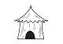

35
Je marche vers la petite hutte. En approchant, je vois, assis en tailleur et adossé à la hutte, un vieil homme vêtu d'une tunique en toile et portant un chapeau de paille. « Bonjour vieil homme! Je suis...» Et le vieillard m'interrompt: « Sam. Et tu es chevalier. » Je regarde l'homme, un peu intrigué. « Tu te demandes bien comment je sais cela n'est-ce pas? » Puis, il me tente un objet. Un morceau de médaillon en or. Je te tourne entre mes doigts pour l'examiner. D'un côté, il y a une tête de dragon. De l'autre, on y voit mon visage et c'est inscrit Chevalier SAM! Mais qu'est-ce que ça veut dire? « Comment puis-je vous remercier? Et, avez-vous une idée de ce que cela veut dire? Où avez-vous ce médaillon? » Il me répond: « Je n'ai aucune idée de ce que cela veut dire mon ami! Je ne suis qu'un simple paysan après tout. Ce médaillon est tombé du ciel près de ma hutte hier. Comme ça! De nulle part! Si tu veux me remercier, quand tu sauras la réponse à tes questions passe me voir et me raconter! » Je le remercie une dernière fois et je le quitte pour poursuivre mon aventure. N'oublie pas de noter ce médaillon sur une feuille car je risque de ne pas m'en souvenir si jamais j'en ai besoin! (Morceau #3)
|